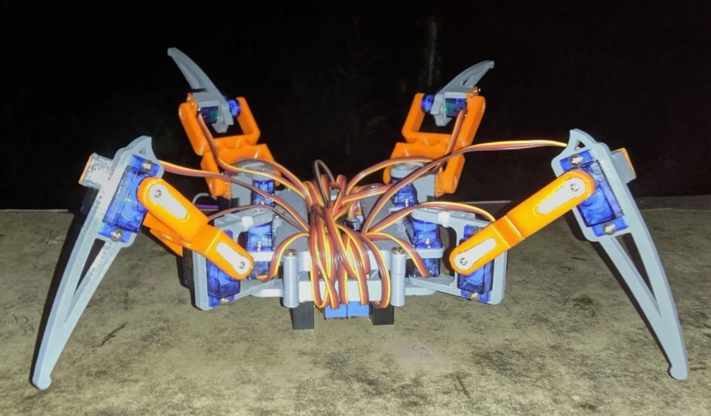

ENTERPRISE REPORTING
BI development and automation
- Developed enterprise BI solutions with Power BI and QlikView.
- Worked on data modeling and reporting automation.
- Client exposure across Stellantis, Samsung, and Bosch.
Business Intelligence Developer · BU Questrom MSBA
I bring approximately five years of enterprise BI experience at Tata Consultancy Services, spanning Power BI, QlikView, data modeling, and reporting automation. I am now an MSBA student at Boston University’s Questrom School of Business, based in Boston, MA, USA.
Business intelligence & data
As a Business Intelligence Developer at TCS from August 2021 to August 2026, I worked on enterprise BI implementations, Power BI and QlikView development, data modeling, and reporting automation. My client exposure includes Stellantis, Samsung, and Bosch.
I migrated 6+ applications from QlikView to Power BI and gained experience with SQL, Snowflake, Azure Data Factory, Python automation, and Airflow DAGs. I am currently on a work sabbatical for graduate studies.
My public repositories show a separate set of Python and engineering interests, including a documented robotics capstone and focused machine learning demonstrations.
ENTERPRISE REPORTING
BI MODERNIZATION
DATA WORKFLOWS
This section summarizes professional experience. Public project repositories below are independent demonstrations; they do not contain client systems or employer data.
Professional experience in enterprise dashboards, reporting automation, and Qlik-to-Power BI migration.
Professional experience in data modeling, transformation, integration, and cloud data platform work.
Professional experience with Python automation and Airflow DAGs. Public project technologies include NumPy, pandas, scikit-learn, TensorFlow, and OpenCV; those demonstrations are described individually below.
Each project describes the available implementation and its scope. Source code is the evidence; performance claims require a reproducible evaluation.

A documented engineering project combining Raspberry Pi, servo control, OpenCV edge detection, and environmental sensor monitoring. The repository includes a 35-page project report and Python modules.
The report documents the broader robot. The current source contains a forward gait, navigation decisions, and sensor publishing. Backward and turning routines are missing; navigation prints decisions rather than driving the gait.
Did the 2021 cost cap help more teams compete near the front? Points share, wins, and podiums from 2010–2025, using a fixed F1DB data release.
Python / pandas / Jupyter
Descriptive statistics and exploratory Welch tests on a small post-cap sample. Overlapping 2022 rule changes mean the cost cap's effect cannot be isolated.
A Windows 11 app for Sony WH-1000XM5 and WH-CH720N: battery, firmware, noise control, five-band EQ, and a system tray.
C++ / Qt / QML / CMake
Experimental beta with installer and portable releases built in CI. Reads are verified on the listed devices; writes are opt-in and not yet verified across firmware versions.
Convolutional autoencoder trained on generated 128 × 128 line patterns with Gaussian noise.
TensorFlow / NumPy
The repository demonstrates reconstruction and matrix SNR evaluation. It does not load audio recordings or establish production audio quality.
Compares two Random Forest configurations on generated records with five features and a constructed binary target.
Python / scikit-learn
An educational comparison of fixed model configurations. No clinical validation, cancer model, SMOTE, or explainability pipeline is included.
A Conv1D classifier for generated numeric and categorical connection records, with scaling and one-hot encoding.
TensorFlow / scikit-learn
The public implementation uses synthetic data, rather than the NSL-KDD dataset. Scores on generated labels do not establish real intrusion detection performance.
CURRENT STUDIES · SEPTEMBER 2026–PRESENT
Boston University · Questrom School of Business
MSBA student · 16-month track
Boston, MA, USA
GRADUATED 2021
Electronics and Communication Engineering with CS
SDM Institute of Technology · Visvesvaraya Technological University (VTU)
GRADUATE ADMISSIONS TEST
330+
Based in Boston, MA, USA and studying Business Analytics at BU Questrom. Connect with me about BI development, analytics, reporting automation, and data integration.